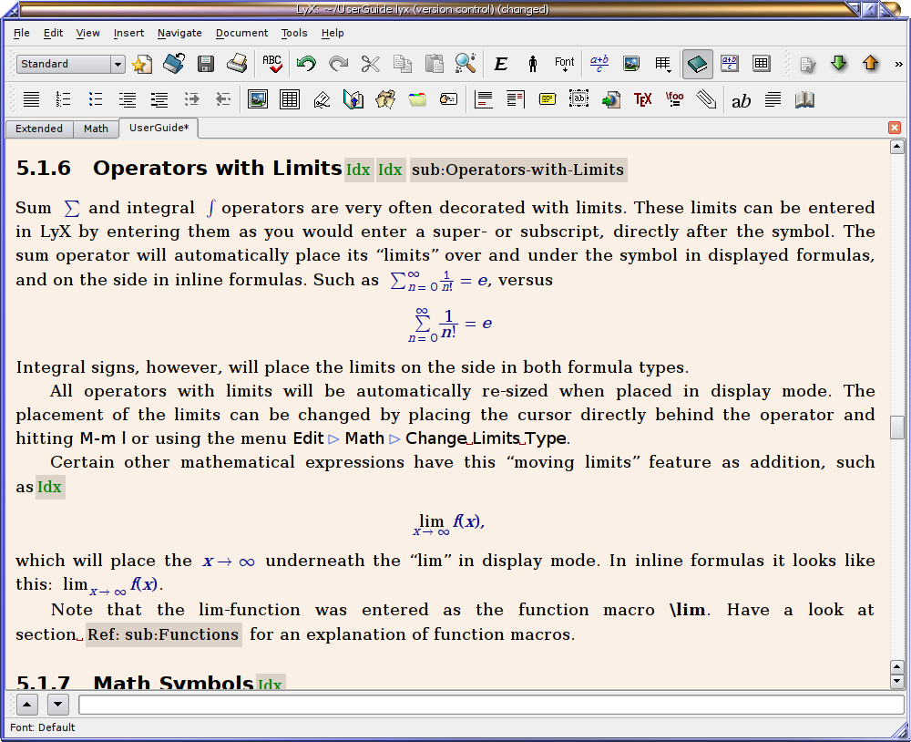
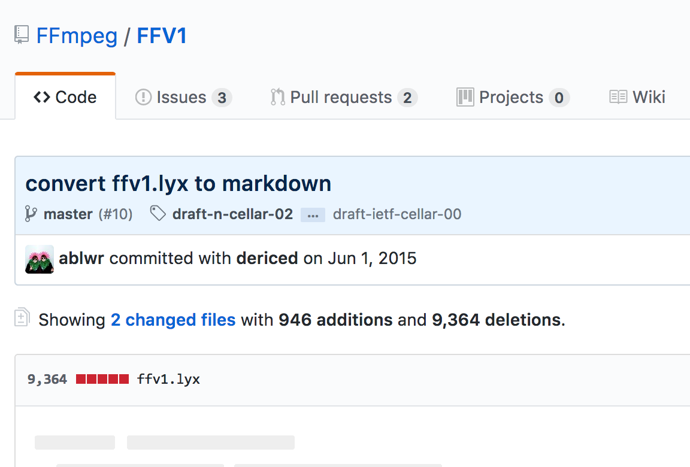
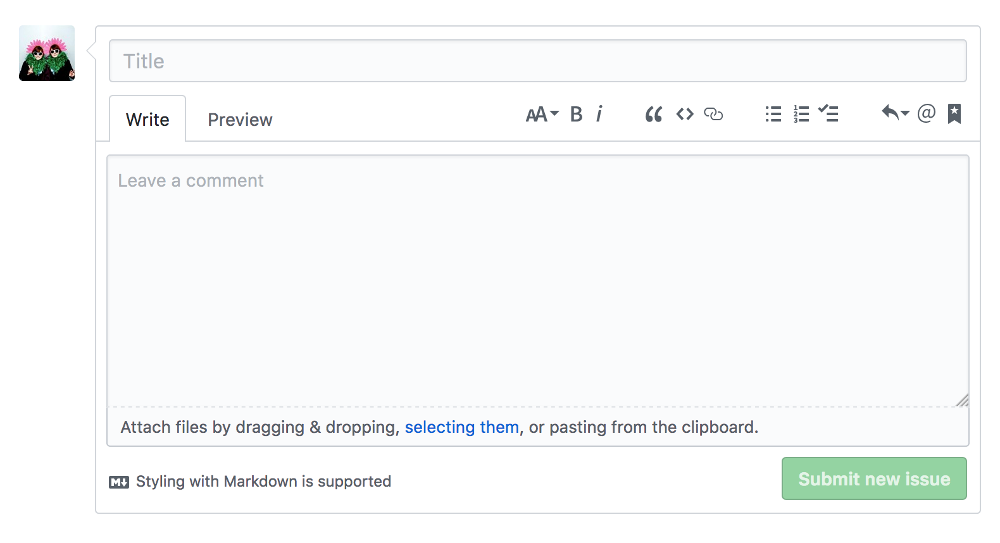

Specification Writing
Ashley Blewer
No Time To Wait! 2
2017-11-09
What was the name of my talk? "spec writers: we are just like you!* \*sorta"? I think I'm being a little egregious here by considering myself a specification writer, but that is kind of what I wanted to talk about here today, an impetus to become more egregious.
Specification Writing
or: destroy Windows ME or: How VLC saved my life or: spec writers: we are just like you! Ashley Blewer
No Time To Wait! 2
2017-11-09
So, I was allocated an extra ten minutes more than I had originally anticipated, thus I'm going to first descend into a brief narrative history of myself and how I came to be here today -- this sounds egregious and in fact it will be.
Let's begin here. I grew up... sorta the same as I am now. Exactly as I am now, actually. I feel like I've kinda spent a long time returning back to who I was when I was 15. This is my computer at the time, it belonged to the whole family but I clearly commandeered it. That IS a VHS player, and I had saved up money to buy a special video card that allowed for video input so I could digitize VHS for no clear reason at all. So, I mean it when I said I haven't really changed.
destroy Windows ME
2001-06-26 10:52:29
1
private
1
45
..or trying to.
Ashley goes to Walmart and buys Linux Mandrake 8.0 (USERFRIENDLY W00T). Ashley read instructions. Ashley never listens to instructiosn so tries to install. Can't install without Defragging Windows. Alrighty. Ashley tries to defrag Windows. No, can't defrag until you fix errors, run yer freakin' ScanDisk. Ashley runs ScanDisk.
Ashley runs ScanDisk. Ashley runs ScanDisk. Ashley runs ScanDisk. Ashley runs ScanDisk. Ashley runs ScanDisk. Ashley runs ScanDisk. Ashley runs ScanDisk. Ashley runs ScanDisk. Ashley runs ScanDisk. Ashley runs ScanDisk. Ashley runs ScanDisk. Ashley runs ScanDisk. Ashley runs ScanDisk. Ashley runs ScanDisk.
Ashley leaves ScanDisk running overnight and it still doesn't finish.
And uh I'm going to stop speaking in third person.
Grahh, damn scandisk keeps locking up my computer.
I'm on the verge of booting up Linux and DELETINGWINDOWS.
....Nah.
Behind me is an extremely embarrassing glimpse into exactly what I was when I was 14. This was a post I had made on Livejournal when I was ... 14, this is 2001. It reads "Ashley -- unsure why I am speaking the third person, even at the time -- goes to Walmart and buys Linux Mandrake 8.0 -- thats right -- it was very cheap, but free software had to be purchased on a CD from a mega-store like Walmart in 2001, because there was no way to download a file that big, at least not in rural South Carolina where I am from -- -- and then, in parenthesis, essentially a proto-hashtag -- (USERFRIENDLY ... W00T)." w00t. There are a couple of really hilarious follow-up entries here where I complain about the soundcard not working at all and just being very frustrated and going to bed. Honestly, like, not a lot has changed in my life.
2001-06-27 19:57:23
110
private
1
Goddamnit. I type up a nice long entry and the computer locks up and so. Yeah.
My sound drives wont work at all. Hell if I know why.
..
I'm going to sleep.
Eh
2001-06-27 22:49:29
private
1
I could ramble on about how I was trying to fix my sound cards for three
hours since I was supposed to be going to sleep..but...I think I'll just actually
go to sleep.
The point is this is the kind of regular ol' baby-nerd, I spent a lot of time feeling like VLC was saving my life. Matroska, too. That's a gross exaggeration -- like I said, egregious -- but that's the way you feel as a teenager, like an open source media player is somehow the most important thing in the world, second to Napster and the internet and a family computer. VLC hit me hard because, as you can see in the previous entries, I was really on a rampage against Windows-related things, including Windows Media Player, which would make you manually download a codec for each video file, and there were a lot of codecs floating around. If there was ever a "codec war", I'm sure it took place around this time. I didn't even like AVI, even though I had no idea it was a file wrapper created by Microsoft. Uh, I still don't like it.
Anyway, VLC was really my introduction to open source software. I mean, yeah, I was running around installing Linux, but in some ways, operating systems seemed just way too big for me to comprehend, and VLC was something tangible. THIS IS OPEN SOURCE. FREE AS IN FREEDOM SOFTWARE. Here's what the website looked like circa 2002. VideoLAN is FREE SOFTWARE released under the GNU PUBLIC LICENSE. Free software, on this page, links here to a definition of free software, which I was really into.
Back to the VLC website, which I bring up now because of this part right here. Contribute! So friendly. I want to help VLC as much as it helped me, which was substantial considering the amount of media I was greedily pirating at the time, and at how much I hated Windows as a metaphor for a lack of control over my angsty teenage life, and so I was super eager to help out. This ended up leading me to a bit of a dead end though, as friendly as this introduction was, because it just led me to having more and more questions.
I had a lot of questions
🤔 wtf is C?
🤔 wtf is C++?
🤔 wtf is compiling?
🤔 how can can you use software to write software?
🤔 how can a computer even make anything?
🤔 🤔 🤔 🤔 🤔 🤔 🤔 ... 😓
Lots of questions. What IS C? I'm 15, I can't drive a car or drink or smoke or even vote and, like the operating system, it was just way too big to wrap my head around and no one was around to explain it to me. Christ, YouTube didn't even exist and Wikipedia had just gotten started. So it was a false start, I went on my way. Completely.
👩💻
I studied design, I studied information science, I studied web development, ... I also bought a Mac and quit trying to swap out PC hardware or whatever, the Dr Strangelove portion of this talk, "How I learned to Stop Worrying and love Apple" -- now here I am in front of you today, much more confident in my ability to understand what C is and how compilers work, but not super confident. Not confident enough to feel I have a solid grasp on how you make a file format out of nothing.
WHY ARE YOU TELLING US THIS?
So, why am I talking about this, other than being given an extra ten minutes and why not use it to totally publicly shame myself?
About writing standards
I want to talk to you... about writing standards.
About
YOU
writing standards
I want to talk to you about YOU writing standards.
About
🎉 YOU 🍾
writing standards
I want to talk to you about YOU having the confidence required to write standards.
You know, I've been super, super fortunate to have spent the past three years on this MediaConch project, truly. It's really been amazing. An important component of this project is why we are all here today and tomorrow talking about Matroska and FFV1 and their standardization. As part of this project, I've done some work with both of these, and I want to talk about it in hopes that it will encourage you to get involved, too. I want to explain the process in a way that de-mystifies it and makes it easier.
🖥 ➡️ 💻
When I got started on this project, the MediaArea team decided it was best if we converted the standards into Markdown and posted them on Github, which would make working on the specs collaboratively easier as well as, we hope, friendlier. This was a big goal, because we want as many people -- including preservationists that may not have the technical background -- to be able to add as they please.

FFV1, of note, was written in LyX, which is based in LaTeX, so it's not suuuuuper fun. I mean some people think it's extremely fun, but it's also hard to read and share, so we did that. LyX is good at math but not good at sharing.

Here's me checking in a whole lot of messy code that other people had to come clean up. Haha! But that was a good start, I did a similar dance move with Matroska... and the good thing about that is all that work is still ongoing, as you'll hear about after this talk from Steve Lhomme!
Man, look at this, though. Bye, LyX. It feels great to replace 9000 lines of code with 900 lines.
🖥 ➡️ 🚫 💻
The messiness plays an important role though, in that it allows other people to jump in and contribute. And once someone contributes once, I hope they'll see it's not so scary and want to contribute again by making corrections. Every tiny contribution helps get these standards across the finish line.
Like this "tiny typo" example, this matters! All typos must be fixed before this process can be finished.
🖥 ➡️ 👋 💻
Something I appreciate about the Matroska specification as it has been existing for the past 16-or-so years -- wow the Matroska spec is old enough to install fringe Linux distros -- something I appreciate is the level at which the documentation is friendly. Unfortunately the friendliness sometimes contradicts the tone that a standards body is really striving for -- forceful and precise, instead of pleasing and flexible, so I've spent some of my time with the Matroska specification un-doing the friendliness. Maybe that suits your personality and you would like to also help remove friendliness from the docs when it is better to be precise and concise?
So far, a lot of this is emphasizing contributions as making actual changes to the file, which takes some knowledge of how Github works. I want to really emphasize that just reviewing the documentation itself for any flaws and emailing somebody is absolutely an important way to contribute. Behind me, this is a gif of me scrolling through just the Table of Contents of the last submitted Matroska document -- it's huge huge huge. Reading a section and checking for typos, or looking at the larger specification and seeing where things can be structured better or more cohesively, that is all important work that needs to be done, and we need people to volunteer to do it!

I had a way to bring all of this together perfectly last night but I fell asleep. I guess I want to say that we have strived in this standards work to put a social infrastructure in place to welcome new people, but I understand friendliness is not enough, sometimes you need an additional push to really have the confidence to do this work, and I want to be that person for you. Dave Rice has certainly been that person for me although I think he sometimes regrets the level of confidence he has instilled in me. I think the problem isn’t in desire or knowledge from people, it’s the confidence factor. I don’t want to use the words imposter syndrome because I feel that shifts the burden on the individual instead of the social infrastructure, but I think this is the crux of the issue.
So yeah, contribute, contribute! Let me help you help out. And thank you so much to all open source software developers and contributors, you have a massive impact on people all over the world, like angry 14-year-olds in the middle-of-nowhere United States, and it's so appreciated.
👩💻 thank 👩💻👩💻👩💻👩💻👩💻👩💻👩💻👩💻👩💻👩💻👩💻
you 👩💻